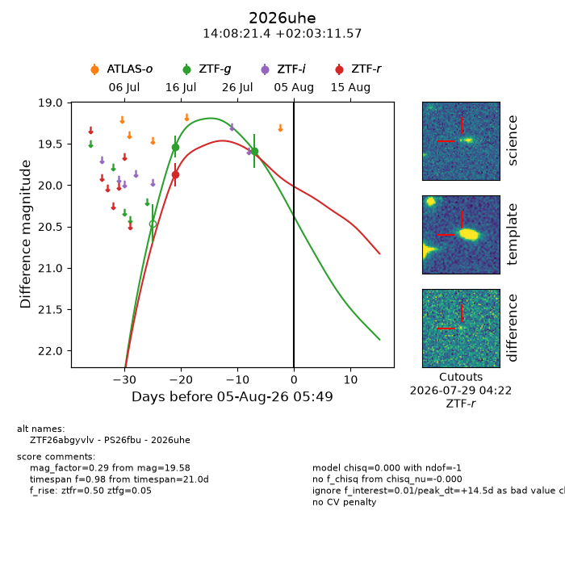
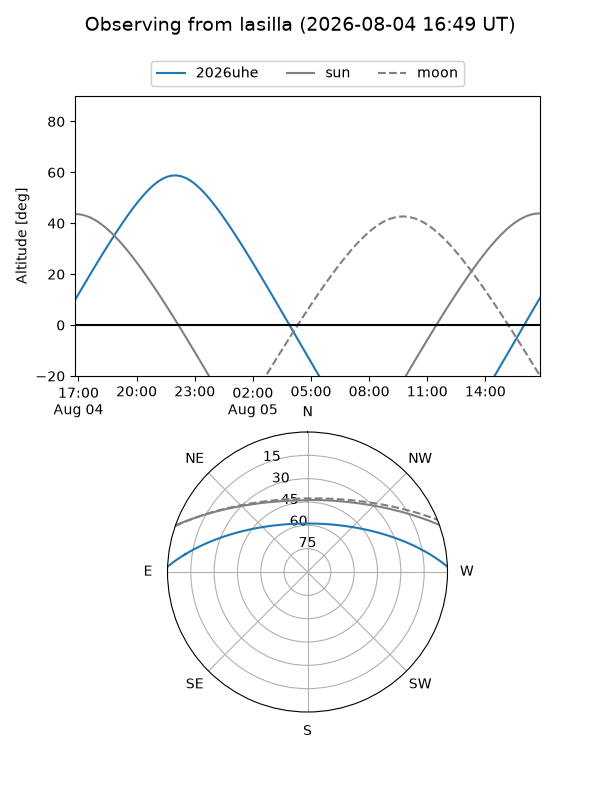
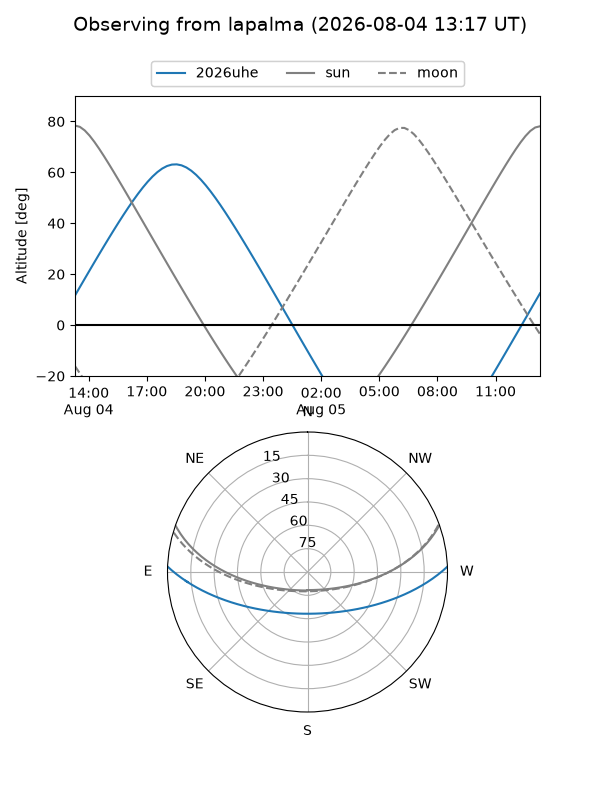
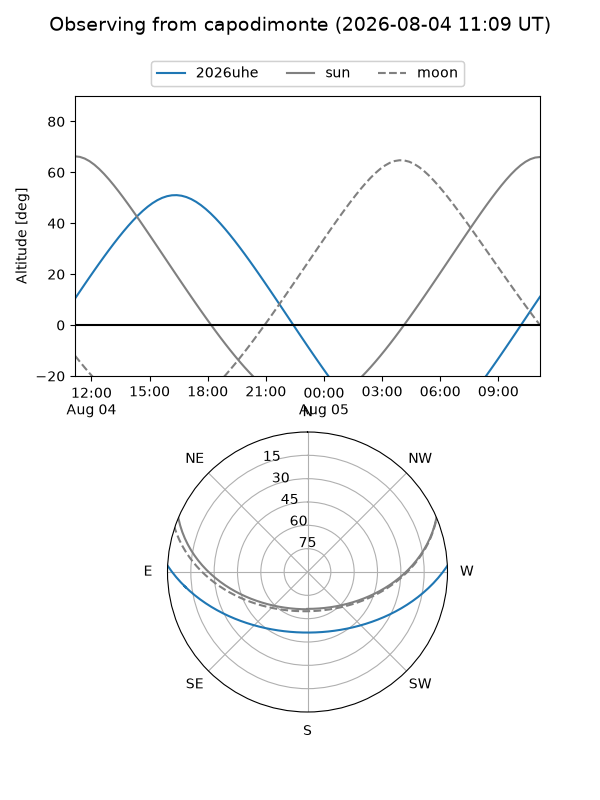
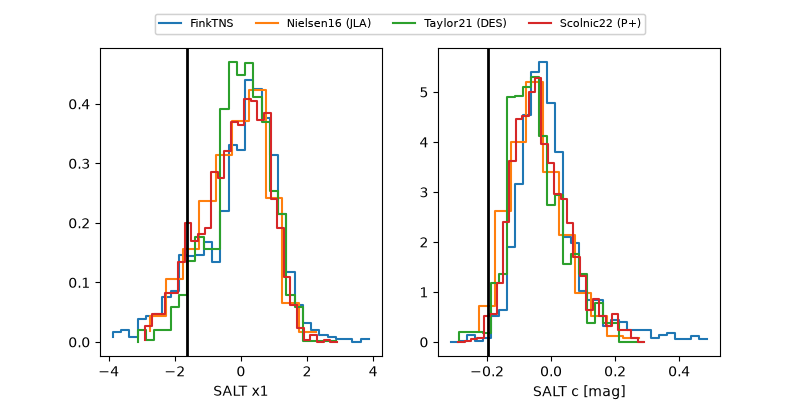

2026uhe
Target 2026uhe at 2026-08-05 05:51
Aliases and brokers:
FINK-ZTF: ztf.fink-portal.org/ZTF26abgyvlv
Lasair-ZTF: lasair-ztf.lsst.ac.uk/objects/ZTF26abgyvlv
ALeRCE-ZTF: alerce.online/object/ZTF26abgyvlv
YSE-PZ: ziggy.ucolick.org/yse/transient_detail/2026uhe
TNS name: wis-tns.org/object/2026uhe
Direct TNS query: direct search
alt names
ZTF26abgyvlv (ztf,fink_ztf)
2026uhe (tns,yse)
PS26fbu (panstarrs)
Coordinates:
equatorial (ra, dec) = 212.0891,+2.05321
equatorial (HMS+DMS) = 14:08:21.39,+02:03:11.57
galactic (l, b) = (342.4956,+58.88475)
Flags:
TNS type: nan
peak dt: +14.5
Photometry:
last ztfg=19.58, ztfr=19.87
2 ztfg, 1 ztfr detections
Lightcurve

Visibility



Additional plots
